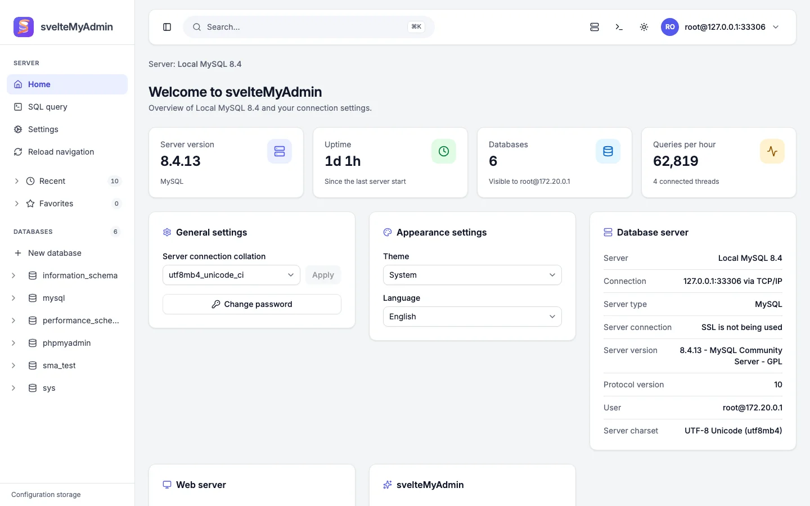

A modern MySQL & MariaDB administration tool
svelteMyAdmin is a fresh take on phpMyAdmin 5.2.3: a fast, clean dashboard to browse data, run SQL, design schemas and manage your servers, while staying compatible with the phpMyAdmin configuration you already have.

Everything you expect from a database admin tool
Feature parity with phpMyAdmin where it makes sense, rebuilt with a modern interface and a maintainable, tested codebase.
-
Browse and edit data
Pagination, sorting, column visibility, inline and grid editing, multi-row edit, copy, delete and export, foreign-key links, BLOB and geometry display, and a typed insert form with functions and NULL toggles.
-
A real SQL editor
CodeMirror 6 with schema-aware autocompletion, SQL formatting, multi-statement scripts with DELIMITER, EXPLAIN and profiling, plus query history, bookmarks and a console drawer.
-
Structure and operations
Edit columns and indexes, partitions, relations and central columns. Rename, copy, move or maintain tables and databases, and manage routines, events and triggers.
-
Import and export
Streamed SQL, CSV, JSON, XML, YAML, Markdown, LaTeX, MediaWiki, PHP array, ODS/ODT and more, with gzip or zip compression and saved export templates. Import SQL, CSV, LOAD DATA, ODS, XML and MediaWiki.
-
Designer and relations
An ER diagram with drag-and-drop relations, saved layout pages, and PDF or SVG schema export, backed by the same relation tables as phpMyAdmin.
-
Server monitoring
Server status with processes and query statistics, a live monitor with charts, an advisor, variables editing, engines, plugins, charsets, binary log and replication status.
-
Users and privileges
Add, edit and drop accounts; global, database, table, column and routine privileges; roles, resource limits, SSL requirements and user groups.
-
Tracking and more
Table and database tracking, a normalization wizard, GIS visualization, column transformations, saved searches, find and replace, and zoom search.
-
Two-factor authentication
TOTP authenticator apps and WebAuthn security keys for cookie-authenticated logins, in addition to cookie, config and HTTP auth types.
-
Internationalized
English, French and Spanish today, with phpMyAdmin translation catalogs as the starting point and a documented way to add more languages.
-
Fast navigation
A navigation tree with filtering, recent and favorite tables, and a command palette opened with a keyboard shortcut.
-
Light and dark
A modern dashboard UI built on shadcn-svelte, following your system theme with a manual toggle.
See it in action
Light and dark themes, captured from the running app. Select an image to enlarge it.
-
DatabasesServer-wide list with collations and statistics. -
Database structureTables, rows, size, engine and bulk actions. -
Table browseSort, filter, edit inline and follow foreign keys. -
SQL editorEditor with history, bookmarks and result grid. -
DesignerVisual ER diagram of your schema and relations. -
Server statusLive counters, traffic and connections. -
ExportFormats, compression and templates. -
LoginCookie authentication with server selection and language.
phpMyAdmin compatible
Move over without starting from scratch. Your bookmarks, relations, history and preferences keep working.
-
Same configuration keys.
config.jsonuses the$cfgkey names from phpMyAdmin:Servers[i].host,auth_type,controluser,pmadb,MaxRowsand so on. -
Same configuration storage. It reads and writes the standard
pma__*tables (bookmarks, history, relations, table coordinates, user preferences, tracking, central columns, export templates). Both tools can share one pmadb. -
Legacy URLs redirect. Old
index.php?route=/table/sql&db=x&table=ylinks land on the matching page. - Familiar dumps. SQL dump structure, CSV, JSON and XML exports aim to round-trip between the two tools.
A modern, typed stack
- Svelte 5
- SvelteKit
- TypeScript
- Tailwind CSS
- shadcn-svelte
- mysql2
- CodeMirror 6
- Vitest & Playwright
Run it in a minute
Requires Node.js 22 or newer and pnpm. Docker is optional and provides demo MySQL and MariaDB databases.
Develop
pnpm install
cp config.sample.json config.json
# demo MySQL 8.4 + MariaDB 11.4 (root / root)
pnpm db:up
pnpm dev
pnpm db:up runs
docker compose for you. Skip it if you already have a
server and edit config.json.
Production
pnpm build
SMA_CONFIG=/path/to/config.json node build
Built with adapter-node. Set
BODY_SIZE_LIMIT to allow larger imports.